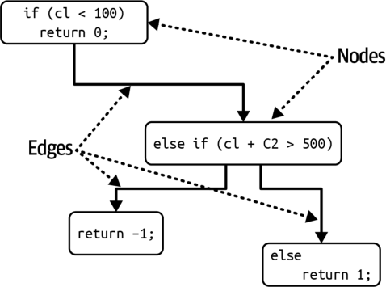

معماران باید با طیفِ بسیار گستردهای از ویژگیهای معماری در همهٔ جنبههای پروژههای نرمافزاری سروکار داشته باشند. جنبههای عملیاتی مانند کارایی، کشسانی و مقیاسپذیری با دغدغههای ساختاری مانند ماژولاریتی و استقرارپذیری درمیآمیزند. برای معماران سودمند است که بدانند چگونه ویژگیهای معماری را بسنجند و بر آنها حاکمیت داشته باشند، بهجای آنکه در اصطلاحاتِ مبهم و تعریفهای کلی غرق شوند. این فصل بر تعریفِ مشخصِ برخی از رایجترین ویژگیهای معماری تمرکز میکند و شیوهٔ ساختنِ سازوکارهای حاکمیت برای آنها را بررسی میکند.
سنجشِ ویژگیهای معماری
معماران به چند دلیل در تعریفِ ویژگیهای معماری با دشواری روبهرو میشوند:
فیزیک نیستند: بسیاری از ویژگیهای معماریِ رایج معناهای مبهمی دارند. برای نمونه، معمار چگونه برای چابکی یا استقرارپذیری طراحی میکند؟ یا برای «کاراییِ برقآسا»؟ افراد در سراسرِ صنعت دیدگاههای بسیار متفاوتی دربارهٔ اصطلاحاتِ رایج دارند؛ این تفاوتها گاهی از زمینههای متفاوت و موجه سرچشمه میگیرند و گاهی تصادفیاند.
تعریفهای بسیار گوناگون: حتی درونِ یک سازمان هم ممکن است بخشهای مختلف بر سرِ تعریفِ ویژگیهای حیاتیای مانند کارایی همنظر نباشند. تا زمانی که توسعهدهندگان، معماران، تیمِ عملیات و دیگران بر یک تعریفِ مشترک توافق نکنند، چگونه میتوانند گفتوگوی درستی داشته باشند؟
بیش از حد مرکب: بسیاری از ویژگیهای معماریِ مطلوب در واقع مجموعهای از ویژگیهای دیگر در مقیاسی کوچکترند؛ همانطور که شاید از بحثِ ما دربارهٔ ویژگیهای معماریِ مرکب در فصل ۵ به یاد داشته باشید. برای نمونه، چابکی به ویژگیهایی مانند ماژولاریتی، استقرارپذیری و آزمونپذیری تجزیه میشود.
تجزیهٔ ویژگیهای معماریِ مرکب به اجزای سازندهشان بخشِ مهمی از ایجادِ تعریفهای عینی برای ویژگیهای معماری است و هر سه مشکلِ بالا را حل میکند.
وقتی سازمانی توافق میکند که همه از تعریفهای استاندارد و مشخص برای ویژگیهای معماری استفاده کنند، یک زبان فراگیر پیرامونِ معماری پدید میآورد. این استانداردسازی به آنها امکان میدهد ویژگیهای مرکب را باز کنند و به خصیصههایی برسند که بهطورِ عینی سنجشپذیرند.
سنجههای عملیاتی
بسیاری از ویژگیهای معماری، مانند کارایی یا مقیاسپذیری، سنجههای مستقیم و آشکاری دارند. با این حال، حتی همینها هم بسته به اهدافِ تیم تفسیرهای ظریفِ فراوانی میپذیرند. برای نمونه، شاید تیمِ شما میانگینِ زمانِ پاسخ (average response time) را برای برخی درخواستها بسنجد؛ نمونهای خوب از سنجهای برای یک ویژگی عملیاتیِ معماری. اما اگر تیمِ شما فقط میانگین را بسنجد، چه میشود اگر یک شرطِ مرزی (boundary condition) باعث شود ۱٪ از درخواستها ۱۰ برابرِ بقیه طول بکشند؟ اگر سایت ترافیکِ کافی داشته باشد، این دادههای پرت (outliers) شاید اصلاً دیده نشوند. برای شکارِ دادههای پرت، شاید بخواهید بیشینهٔ زمانِ پاسخ را هم بسنجید.
تیمهای سطحِ بالا فقط اعدادِ سفتوسختی برای کارایی تعیین نمیکنند؛ آنها تعریفهایشان را بر تحلیلِ آماری بنا میکنند. برای نمونه، فرض کنید یک سرویسِ پخشِ ویدئو میخواهد مقیاسپذیری را پایش کند. مهندسان بهجای تعیینِ عددی دلبخواهی بهعنوانِ هدف، مقیاس را در گذرِ زمان میسنجند و مدلهای آماری میسازند، سپس اگر معیارهای بیدرنگ از مدلهای پیشبینی بیرون بزنند، هشدار میدهند. اگر چنین شود، این شکست میتواند دو معنا داشته باشد: یا مدل نادرست است (که تیمها دوست دارند بدانند) یا مشکلی در کار است (که تیمها این را هم دوست دارند بدانند).
انواعِ ویژگیهایی که تیمها میسنجند، همپای ابزارها، اهداف، دستگاهها و قابلیتها، بهسرعت تحول مییابند. برای نمونه، اخیراً بسیاری از تیمها بر بودجههای کارایی (performance budgets) برای معیارهایی مانند نخستین رنگآمیزیِ محتوایی (first contentful paint) و نخستین بیکاریِ CPU (first CPU idle) تمرکز کردهاند؛ هر دو معیار گویای بسیاری از مشکلاتِ کارایی برای کاربرانیاند که با دستگاههای موبایل صفحههای وب را باز میکنند. با تغییرِ این موارد و چیزهای بیشمارِ دیگر، تیمها چیزهای تازهای برای سنجیدن و راههای تازهای برای سنجششان خواهند یافت.
چهرههای گوناگونِ کارایی
بسیاری از ویژگیهای معماری که توصیف میکنیم چند تعریف دارند. کارایی نمونهٔ بسیار خوبی است. بسیاری از پروژهها به کاراییِ کلی نگاه میکنند: برای نمونه، اینکه چرخههای درخواست و پاسخ در یک برنامهٔ وب چقدر طول میکشند. اما معماران و مهندسانِ DevOps در بسیاری از سازمانها، با کارِ بسیار زیاد، بودجههای کاراییِ مشخصی برای بخشهای مشخصی از برنامه تعیین کردهاند. برای نمونه، بسیاری از سازمانها رفتارِ کاربران را پژوهیدهاند و دریافتهاند که زمانِ بهینه برای نخستین رندرِ صفحه (first-page render)، یعنی نخستین نشانهٔ دیدنیِ پیشرفتِ بارگذاریِ یک صفحهٔ وب در مرورگر یا دستگاهِ موبایل، کسری از یک ثانیه است. بیشترِ برنامهها در این معیار در محدودهٔ دو رقمی قرار میگیرند. اما برای سایتهای مدرنی که میکوشند هرچه بیشتر کاربر جذب کنند، این معیار مهمی برای پیگیری است و سازمانهای پشتِ این سایتها سنجههای بسیار ظریفی ساختهاند.
برخی از این معیارها پیامدهای دیگری هم برای طراحیِ برنامه دارند. بسیاری از سازمانهای آیندهنگر برای بارگیریِ صفحهها بودجهٔ وزنِ کیلوبایتی (K-weight budget) تعیین میکنند؛ یعنی حداکثری برای حجمِ کتابخانهها و چارچوبهایی که میتوانند در یک صفحهٔ مشخص بارگذاری شوند، بر حسبِ بایت، مجاز میدانند. منطقِ آنها از محدودیتهای فیزیکی میآید: در هر لحظه فقط شمارِ محدودی بایت میتواند از شبکه عبور کند، بهویژه برای دستگاههای موبایل در مناطقِ کمپهنایباند.
سنجههای ساختاری
برخی سنجههای عینی به اندازهٔ کارایی آشکار نیستند. ویژگیهای ساختاریِ درونی، مانند ماژولاریتیِ خوشتعریف، چطور؟ این نمونهٔ خوبی از یک ویژگی نامشهودِ معماری است: معماران مسئولِ تعریفِ مؤلفهها و تعاملهایشان هستند و میخواهند ساختاری پایدار برای کیفیتِ بالای کلی بسازند. متأسفانه هنوز هیچ معیارِ جامعی برای ارزیابیِ کیفیتِ یک معماری وجود ندارد. با این حال، معیارها و ابزارهای رایجی هست که به معماران امکان میدهد به برخی جنبههای حیاتیِ ساختارِ کد بپردازند، هرچند در ابعادی محدود.
یکی از جنبههای سنجشپذیرِ کد پیچیدگی است که معیارِ پیچیدگی چرخهای آن را تعریف میکند.
پیچیدگی چرخهای
پیچیدگی چرخهای (CC) معیاری در سطحِ کد است که Thomas McCabe Sr. در سالِ ۱۹۷۶ طراحی کرد تا سنجهای عینی برای پیچیدگیِ کد در سطحِ تابع/متد، کلاس یا برنامه فراهم کند. این معیار با بهکارگیریِ نظریهٔ گراف (graph theory) روی کد محاسبه میشود؛ بهطورِ مشخص، روی نقاطِ تصمیم (decision points) که مسیرهای اجرای متفاوتی پدید میآورند. برای نمونه، اگر تابعی هیچ دستورِ تصمیمی (مانند دستورهای if) نداشته باشد، آنگاه CC = 1 است. اگر تابع یک دستورِ شرطی داشته باشد، آنگاه CC = 2 است، چون دو مسیرِ اجرای ممکن وجود دارد.
فرمولِ محاسبهٔ CC برای یک تابع یا متد $CC = E - N + 2$ است که در آن N نمایندهٔ گرهها (nodes) یا همان خطوطِ کد، و E نمایندهٔ یالها (edges) یا همان تصمیمهای ممکن است. کدِ C-مانندِ مثالِ ۶-۱ را در نظر بگیرید.
مثال ۶-۱. نمونهکدی برای ارزیابیِ پیچیدگی چرخهای
public void decision(int c1, int c2) {
if (c1 < 100)
return 0;
else if (c1 + C2 > 500)
return 1;
else
return -1;
}
پیچیدگی چرخهایِ مثالِ ۶-۱ برابر با ۳ است ($3 - 2 + 2$)، همانطور که در شکل ۶-۱ نشان داده شده است.

شکل ۶-۱. گرافِ پیچیدگی چرخهای برای تابعِ decision.
عددِ ۲ در فرمولِ پیچیدگی چرخهای سادهسازیای برای یک تابع/متدِ منفرد است. برای فراخوانیهای انشعابی به متدهای دیگر (fan-out calls)، که در نظریهٔ گراف مؤلفههای همبند (connected components) نامیده میشوند، فرمولِ کلیتر $CC = E - N + 2P$ است که در آن P نمایندهٔ شمارِ مؤلفههای همبند است.
معماران و توسعهدهندگان همگی بر این توافق دارند که کدِ بیش از حد پیچیده نوعی «بوی کد» است؛ چیزی در کد که آنقدر بد است که گویی بویی خیالی از آن برمیخیزد. چنین کدی تقریباً به همهٔ ویژگیهای مطلوبِ پایگاههای کد آسیب میزند: ماژولاریتی، آزمونپذیری، استقرارپذیری و مانندِ اینها. اگر تیمها پیچیدگیِ رو به رشد را بهتدریج زیرِ نظر نگیرند، این پیچیدگی سرانجام بر پایگاهِ کد چیره میشود.
پیچیدگی چرخهای نمونهٔ خوبی از کُندیِ معیارهایی است که معماران در اختیار دارند. این معیار با اینکه پیچیدگیِ کد را میسنجد، نمیتواند تشخیص دهد که این پیچیدگی ذاتی است (چون مسئلهای پیچیده را حل میکنیم) یا عارضی (چون طراحیِ ضعیفی پیاده کردهایم). معیارهایی مانند CC برای ارزیابیِ کد، چه توسعهدهندگان آن را نوشته باشند و چه هوش مصنوعی مولد، بسیار سودمندند. هوش مصنوعی مولد معمولاً مسائل را با زورِ خام (brute force) حل میکند و اغلب به پیچیدگی عارضی میانجامد.
مقدارِ خوب برای پیچیدگی چرخهای چیست؟
پرسشی که نویسندگان هنگامِ صحبت دربارهٔ این موضوع بارها میشنوند این است: مقدارِ آستانهٔ (threshold) خوب برای CC چیست؟ البته، مانندِ همهٔ پرسشها در معماری نرمافزار، پاسخ این است: بستگی دارد! بهطورِ مشخص، بستگی به پیچیدگیِ حوزهٔ مسئله دارد. برای نمونه، اگر مسئلهای از نظرِ الگوریتمی پیچیده داشته باشید، راهحل توابعِ پیچیدهای به بار میآورد. برخی از جنبههای کلیدیِ CC که معماران باید پایش کنند: آیا توابع به دلیلِ حوزهٔ مسئله پیچیدهاند یا به دلیلِ کدنویسیِ ضعیف؟ یا شاید کد بهشکلِ نامناسبی بخشبندی شده است؟ به بیانِ دیگر، آیا میتوان یک متدِ بزرگ را به تکههای منطقیِ کوچکتر شکست و کار (و پیچیدگی) را میانِ متدهای خوشتجزیهتر (well-factored) پخش کرد؟
بهطورِ کلی، آستانههای رایج در صنعت برای CC نشان میدهند که مقدارِ کمتر از ۱۰ پذیرفتنی است، مگر ملاحظاتِ دیگری مانند حوزههای پیچیده در کار باشد. ما این آستانه را بسیار بالا میدانیم و ترجیح میدهیم مقدارِ CC کمتر از پنج باشد که نشانهٔ کدی منسجم و خوشتجزیه است. ابزاری برای معیارها در دنیای Java به نامِ Crap4J میکوشد با ارزیابیِ ترکیبی از CC و پوششِ کد (code coverage) تعیین کند کدِ شما تا چه حد ضعیف (یا به تعبیرِ خودشان «crappy») است؛ اگر CC از ۵۰ بیشتر شود، هیچ میزانی از پوششِ کد آن کد را از بیکیفیتی نجات نمیدهد. وحشتناکترین مصنوعِ حرفهایای که Neal تا کنون با آن روبهرو شده، یک تابعِ منفردِ C بود که قلبِ یک بستهٔ نرمافزاریِ تجاری به شمار میرفت و CC آن بیش از ۸۰۰ بود! این یک تابعِ واحد با بیش از ۴٬۰۰۰ خط کد بود که دستورهای GOTO را بیدریغ به کار میبرد (تا از حلقههای تودرتو با عمقی باورنکردنی بگریزد).
رویههای مهندسیای مانند توسعهٔ آزمونمحور (test-driven development, TDD) این اثرِ جانبیِ سودمند را دارند که برای یک حوزهٔ مسئلهٔ معین، بهطورِ میانگین متدهایی کوچکتر و کمپیچیدگیتر پدید میآورند. توسعهدهندگان در TDD میکوشند آزمونی ساده بنویسند و سپس کمترین مقدارِ کدِ لازم برای گذر از آن آزمون را بنویسند. این تمرکز بر رفتارِ مجزا و مرزهای خوبِ آزمون، متدهایی خوشتجزیه و بسیار منسجم با CC پایین را تشویق میکند.